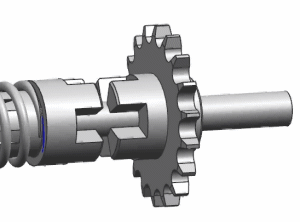
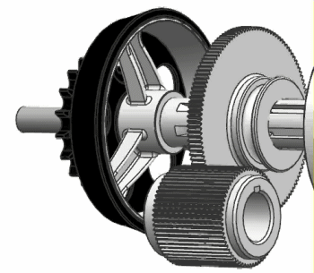

问题
1
2
3
定义3D 接触时，下面哪个操作对于确保稳定、精确的接触表示较为有利？
可以选择多个您认为正确的答案。
在这个示例中，移动的输入体与固定的输出体接触，但是错误地彼此穿透了。在两个体之间定义了3D 接触，并且有驱动强迫输入体向前运动1.75英寸，以咬合输出体。
要解决错误的穿透问题，您应该先做什么？

请选择一个答案。
在下面的锥形离合器示例中，哪个操作会对修复接触中的干扰有明显的效果？

可以选择多个您认为正确的答案。
错误！
正确！
定义3D 接触时，总是选择较大、较稳定的体作为基本体，如果接触发生脱离或者其它干扰，增大摩擦可以提高稳定性，推荐将局部最大穿透值设为0，以提高求解性能。
引起输入体前进1.75英寸的运动驱动中包含 STEP 函数，这会使输入体穿透输出体，而不考虑任何接触力，您可以增大刚度和/或阻尼，但是运动驱动会继续强迫体发生穿透，减小运动函数 STEP 中使用的位移值可以纠正这种穿透。
上述所有操作都会使接触表示的结果更精确，但是最大小平面大小因子的效果并不明显，因为接触体都是光滑的；平面公差因子值的效果也不会明显，因为接触体的大小相似。